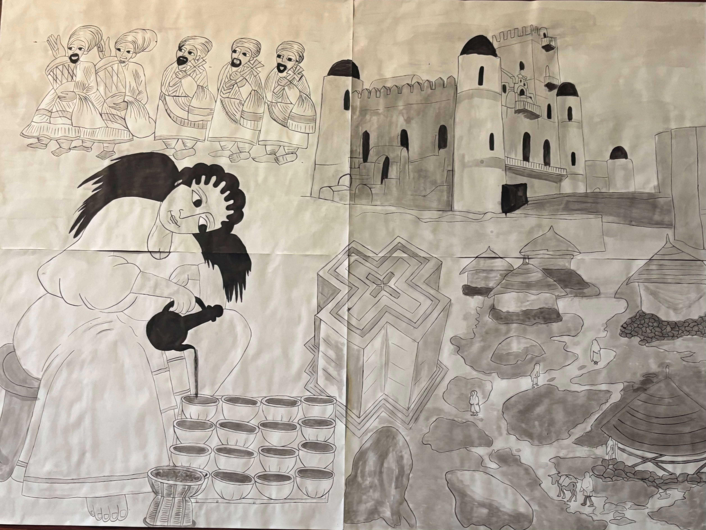
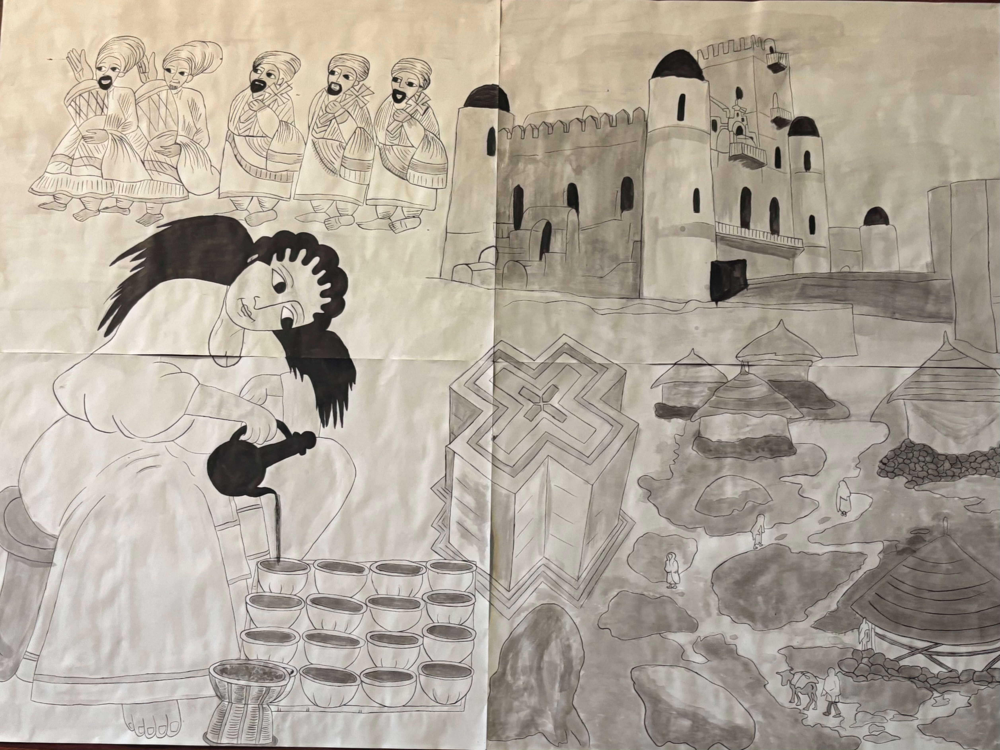
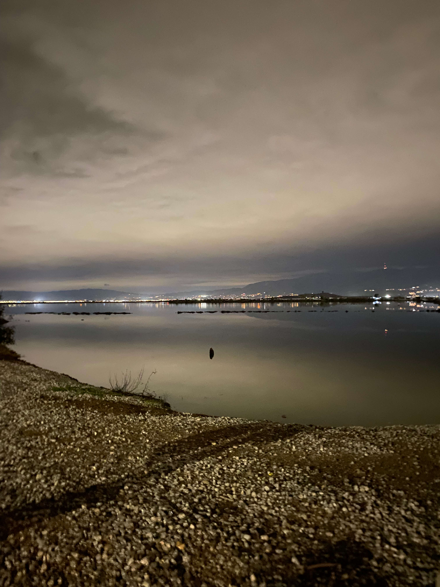
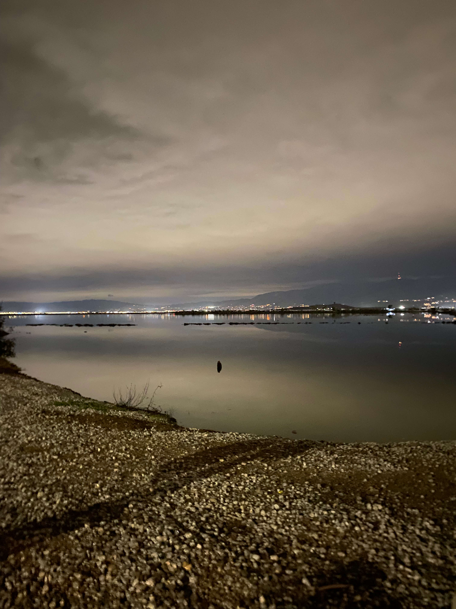
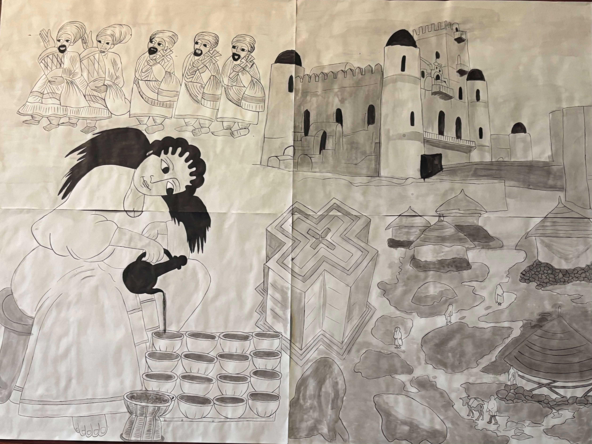
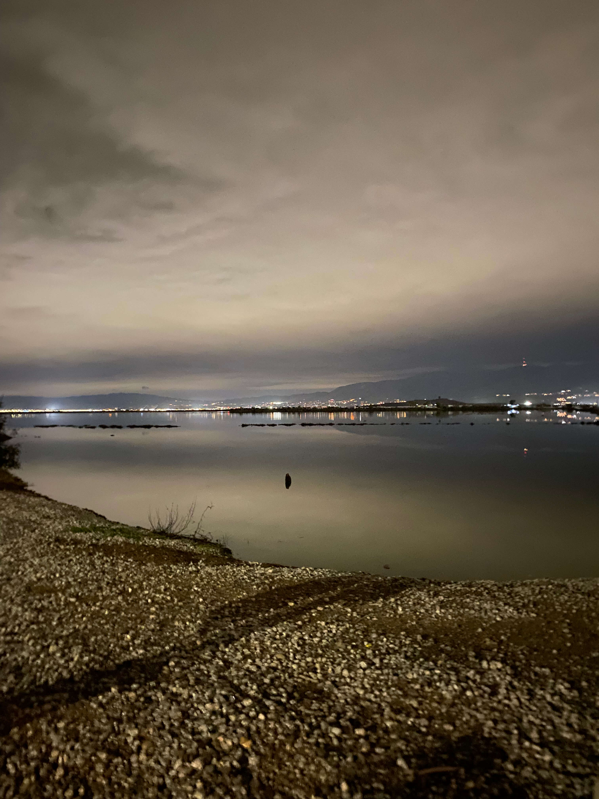

Painting / Illustration
 


Photography


 

Sculpture


Hello, my name is Misrak. I am a first-generation Ethiopian American multimedia artist. My work often involves visual experimentation, spirituality, my culture, and knowledge. I aim to create projects that are visually thought-provoking and invite reflection. Check out my work below!
San Jose State University — Digital Art Media (in progress)

